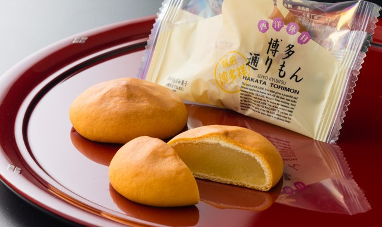
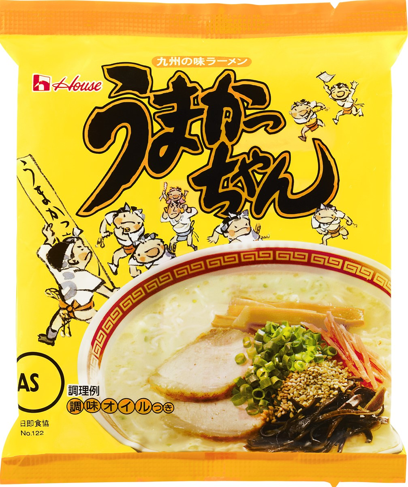

九州最大都市！福岡！
- 人気のお土産を紹介します
博多通りもん
柔らかい白あんが舌の上でとろける 博多名物の傑作まんじゅう「博多通りもん」 明月堂人気ナンバー１のお菓子「博多通りもん（とおりもん）」。 モンドセレクション金賞を20年連続受賞し、今や世界に誇る福岡・博多の名菓となりました。 
うまかっちゃん

とんこつスープをベースにした、コクのある九州タイプのラーメンなので、とんこつラーメンが好きな九州の方においしく食べていただくことができる即席袋入りラーメンです。九州の味であるとんこつラーメンを家庭で手軽に楽しむことができます。